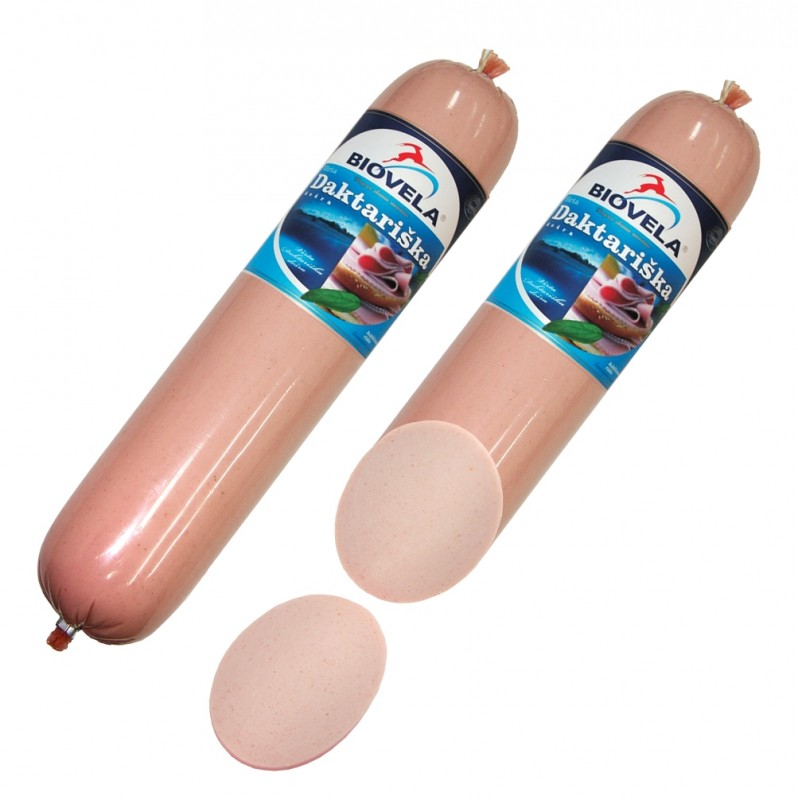

Naminė bulvių dešra. Gaminkite iškart dvigubą porciją!
 LT German (Deutsch) English (English) Spanish (español) Lithuanian (lietuvių) Polish (polski) Russian (русский) Meniu Mano išsaugoti receptai Alkoholiniai kokteiliai Brendžio kokteiliai Degtinės kokteiliai Džino kokteiliai Likerio kokteiliai Romo kokteiliai Šampano kokteiliai Tekilos kokteiliai Vermuto kokteiliai Viskio kokteiliai Pasaulio virtuvė Lietuviški patiekalai Azijietiški patiekalai Indiški Patiekalai Itališki patiekalai Kiniški patiekalai Bulvių patiekalai Paukštienos patiekalai Antienos patiekalai Kalakutienos patiekalai Vištienos patiekalai Apkepai Desertai Bandelės Keksai ir keksiukai Sausainiai Saldainiai Patiekalai pusryčiams Blynai Sumuštiniai Daržovių patiekalai Daržovės ir atsargos žiemai Greitai pagaminami patiekalai Grybų patiekalai Mėsos patiekalai Jautienos patiekalai Kepsniai ir kotletai Kiaulienos patiekalai Patiekalai iš faršo Triušienos patiekalai Jūros gėrybių patiekalai Nealkoholiniai gėrimai Kavos Kalėdiniai patiekalai Kepiniai Kiaušinių patiekalai Košės Makaronai Mišrainės Pyragai Obuolių pyragai Šokoladiniai pyragai Varškės pyragai Trupininiai pyragai Padažai ir pagardai Patiekalai pietums Sriubos Patiekalai vakarienei Patiekalai iškylai Šašlykai Kūčių patiekalai Žuvies patiekalai Lašišos patiekalai Silkės patiekalai Tuno patiekalai Patiekalai vaikams Patiekalai velykoms Patiekalai visai šeimai Picos Salotos Sveiki patiekalai Tortai Troškiniai Užkandžiai Užkandžiai prie alaus Vieno kąsnio užkandžiai Varškės patiekalai Veganiški receptai Veganiški pyragai Vegetariški patiekalai Virtinukai Receptai Bulvės, bulvių patiekalai - receptai Naminė bulvių dešra. Gaminkite iškart dvigubą porciją!Naminė bulvių dešra. Gaminkite iškart dvigubą porciją!
Ingredientai
bulvės (nevirtos): 800 gramų natūralus apvalkalas: 1 metro mėsa : 200 gramų ( kiaulienos , jautienos ar vištienos ) lašiniai : 150 gramų (arba pagal skonį) grietinė: 1 valgomojo šaukšto česnakas: 6 skiltelių druska pipirai lauro lapai: 1 malta kalendra ReklamaJums gali patikti
Močiutės iš žemaitijos receptas: parodė, kaip gaminami skaniausi žemaičių blynai ! Žuvies užkepėlė su daržovėmis Žuvies maltinukai su daržovėmis ReklamaRecepto paruošimas
1. Iš pradžių paruoškite mėsą bei lašinius. Viską supjaustykite smulkiais kubeliais arba galite sumalti mėsmale per stambų sietelį. Lašinius galite atskirai apkepti. Galite gaminti ir be lašinių. 2. Tuomet svogūną ir česnaką susmulkinkite blenderyje. Jeigu jūs darote dešrą tik iš bulvių, svogūną privalu apkepti - šitaip bus skaniau. Reklama 3. Žalias bulves sutarkuokite stambia trintuve (arba supjaustykite smulkiais kubeliais), iškart sumaišykite su svogūnais bei česnakais - šitaip jos nepatamsės. Stambios bulvės dešroje daug skaniau, nei dešra iš bulvių košės. 4. Dėkite mėsą su lašiniais, lauro lapą (reikia sulaužyti arba susmulkinti). Berkite pipirų ir sūdykite pagal savo skonį. Dar dėkite maltos kalendros. 5. Kruopščiai sumaišykite rankomis - įdaras paruoštas. 6. Prikimšimui naudokite mėsmalę su antgaliu (yra galimybė kimšti rankomis, naudojant butelio kakliuką), dėkite ant antgalio apvalkalą. 7. Apvalkalą dešrai galite nusipirkti didžiuosiuose parduotuvėse. Reklama 8. Dėkite įdarą į mėsmalę ir prikimškite dešreles. 9. Persukite apvalkalą, kai bus gautas reikiamas ilgis. Šitokiu būdu pripildykite visą apvalkalą. 10. Paruoštas dešreles pradurkite iš dviejų pusių adatos arba dantų krapštuko pagalba, kad gaminimo procese nesusprogtų. 11. Galite užšaldyti kitam kartui, išvirti ir apkepti, arba kepti orkaitėje. 12. Aš pati pusę išverdu verdančiame vandenyje su druska maždaug 10-15 minučių. Reklama 13. Iš anksto nusausinkite popierine servetėle. Virtą bulvinę dešrą apkepkite iš dviejų pusių aliejuje, kol susidarys rusva plutelė. 14. Antrą pusę aš iškepu orkaitėje. Kepimo skardą ir bulvinę dešrą sutepkite aliejumi. Orkaitėje kepkite 40 minučių 180 laipsnių temperatūroje. 15. Galite kelis kartus procese apversti - gražiau apkeps. Bulvinė dešra orkaitėje jau paruošta! Man labai skanu patiekti su grietine. Skanaus ir Jums! 16. Rekomendacija: Daugiau bulvių receptų rasite: Bulvių receptai . KomentuotiSekite mus:
Lina Vasiliauskaitė-Valiukevičienė
PatikoAtsakyti Reklama
Receptas: Bulvinė pica
Noriu pasigaminti
Šį receptą visi tiesiog dievina! Paprasta, pigu ir greita!
Noriu pasigaminti
Virtų bulvių paplotėliai su keptais pomidorais
Noriu pasigaminti
Bulvių suktinukai su mėsa - baigia užkariauti visų bulvių mėgėjų širdis!
Noriu pasigaminti
Bulvių apkepas su žuvimi
Noriu pasigaminti
Keptos šviežios bulvės su česnaku orkaitėje
Noriu pasigaminti
ReklamaBulvių plokštainis su vištiena
Noriu pasigaminti
Bulviniai blynai su morkomis
Noriu pasigaminti
Bulvinės tešlos suktinukai su faršo įdaru
Noriu pasigaminti
Greiti cepelinai - niekada nemaniau, kad cepelinus galima pagaminti taip greitai!
Noriu pasigaminti
Traškūs vokiški bulviniai blynai
Noriu pasigaminti
Ypač skanus močiutės kugelis: sugaišto laiko nesigailėsite, viską atpirks skonis
Noriu pasigaminti
traffix.lt Bulvės, bulvių patiekalai - receptai